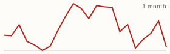
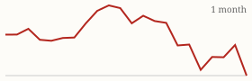

| Today's briefing for operators |
Top line: Up to half of deals are falling apart in escrow |
|
| Friday, October 23, 2026 | Late Edition | Curated from 63 voices on X |
|
Real Estate
Up to Half of Real Estate Deals Are Dying in Escrow
Cole Ruud-Johnson says he's seeing 25% to 50% of deals fall apart after they're already under contract.
By @coleruudjohnson |
Cole Ruud-Johnson says that across every kind of real estate deal he sees, a quarter to half now fall apart once they're in escrow. His point is that a signed contract isn't the finish line for any investor; it's where the real work starts, and you need a deliberate process for getting from contract to close. |
For a CEO, that's a pipeline math problem. If half your contracts can die, forecast revenue on closings rather than signings, keep enough deals in the funnel to absorb the losses, and make sure someone owns every file from signature to closing table, with clear checkpoints for title, buyer funding and inspections. |
|
| Read on X |
|
Mortgage Rates & Markets | Mortgage Rates Today's average lender rates | 30-year fixed | 7.30% | -0.10 | | 15-year fixed | 6.96% | -0.08 |
Daily change vs. prior day. Source: Mortgage News Daily, as of 10/22/2026 (updated weekdays about 4 PM ET). |
|
S&P 500 Close of Thu, Oct 22 S&P 500 7,663.43 ▼ -93.74 (-1.21%)  Yahoo Finance chart data (daily closes) |
|
Nasdaq Composite Close of Thu, Oct 22 Nasdaq Composite 26,008.86 ▼ -694.00 (-2.60%)  Yahoo Finance chart data (daily closes) |
|
| Real Estate & Deals | Three AI Bots That Find Deeper Discounts By @coleruudjohnson Cole Ruud-Johnson lays out AI use cases for off-market leads: scan obituaries and probate filings and skip-trace out-of-state heirs, flag homes whose power or water use drops 90% for 60+ days, and track stalled permits and stop-work orders. Read on X |
Volume Is Up, Spreads Are Normal By @NickMaccini Nick Maccini says he's getting a lot of deals sent his way, but few outrageous spreads. Buyers are still buying; the deal just has to be cheap enough. Read on X |
Underwrite 10% Vacancy, Not 5% By @ChrisRamsey60 Chris Ramsey says brokers always underwrite 5% vacancy even on Class C multifamily, when the real number these days is closer to 10%. Check the broker's assumptions before you trust the numbers. Read on X |
Nick Gerli's chart of 2026 office absorption by market. Image via @nickgerli1 on X Demand Is Shifting Back to Gateway Cities By @nickgerli1 Nick Gerli says New York and the Bay Area have absorbed 10.8 million square feet of office space in 2026, versus 4.2 million across 17 Sun Belt growth markets combined. He expects AI jobs and return-to-office to favor gateway markets for the next decade. Read on X |
| AI Briefing | Claude Apps Switch to Auto Mode by Default By @claudeai Starting next week, Claude's web, desktop and mobile sessions on Pro, Max and Team plans will run in auto mode, with an automated check blocking risky actions instead of asking you to approve each step. You can switch back to manual anytime. Read on X |
Anthropic's Claude on Google Cloud announcement graphic. Image via @claudeai on X Claude Is Now Fully Available on Google Cloud By @claudeai Anthropic-managed Claude models are generally available on Google Cloud, with the full Claude Platform feature set billed through Google Cloud. Companies already on Google can use Claude without a separate vendor setup. Read on X |
OpenAI Ships a Decisions API By @OpenAIDevs OpenAI's Decisions API is generally available. It lets apps and agents quickly classify text and images and decide what happens next without generating a full response, which makes routing tasks like lead triage cheaper and faster. Read on X |
Chart from the study comparing Opus 4.8 and human peer reviewers. Image via @emollick on X AI Beats Experts at Peer Review By @emollick Ethan Mollick shares a study of 124 Harvard social science papers in which Claude Opus 4.8 outperformed human expert peer reviewers on every measure. Expert review work is one of the places AI is now better than people. Read on X |
Machines Win, People Still Play By @PeterDiamandis Peter Diamandis notes computers beat the world chess champion in 1997, yet Chess.com just passed 250 million members. As machines do more of the work, the part of being human that keeps growing is the part you do because you love it. Read on X |
Five Commands for Learning Faster By @Sabrina_Ramonov Sabrina Ramonov shares ChatGPT study commands such as /handwritten for simple notes, /question-predictor for practice questions and /socrates for teaching one question at a time. They work well for training new team members on scripts or processes. Read on X |
| Business & Leadership | Your Next Business Is in Your Invoices By @ChrisRamsey60 Chris Ramsey's playbook for starting a service business: pick a trade your properties already pay for, like maintenance or HVAC, partner with a skilled operator and give them ownership, prove it on your own portfolio, then sell to other owners. Read on X |
Act First, Let the Plan Show Up By @LeilaHormozi Leila Hormozi says you can wait for the perfect plan or take action and let the plan show up, and only one of those moves you forward. Read on X |
Make, Keep, Give By @AlexHormozi Alex Hormozi's three levels of money: first it's about what you make, then what you keep, then what you give. A quick check on which level your business decisions are optimizing for. Read on X |
|
The Hyre Times is compiled each morning by Groky from public posts on X plus public rate and market data. Summaries reflect the authors' own claims and have not been independently verified. Not financial advice. © 2026 Hyre Times. |
|